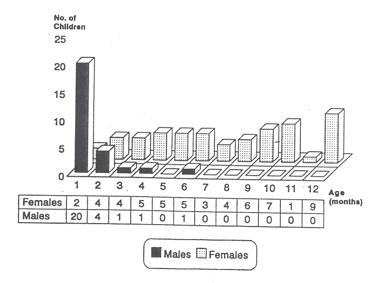

THE CIRCUMCISION REFERENCE LIBRARY
Department of Pediatrics, Assaf Harofeh Medical Center (Affliated to Sackler Faculty of Medicine, Tel Aviv University), Israel
ABSTRACT: Circumcision seems to reduce the over all incidence of urinary tract infections (UTI) although a few studies have suggested that ritual circumcision may be a predisposing factor for UTI within the first few weeks following the procedure. The aim of this study was to investigate a possible causal relationship between ritual circumcision and UTI. The study comprised 82 infants with UTI, 55 females and 27 males under the age of 1 year. All males were circumcised on the eight day of life. The median age of infection was 0.75 and 7.0 months for males and females respectively. Fifty-two percent (14/27) of UTI were diagnosed within 2 weeks following circumcision. A significantly lower incidence in Escherichia coli-induced UTI was observed in males compared with females, 67% and 93% respectively. Similarly, the incidence of E. coli-induced UTI was significantly lower in males presenting within 2 weeks following the procedure (92%). Positive blood cultures of an identical microorganism were observed in 6/27 males compared to 2/55 females. The incidence of urinary tract malformations and their severity were similar in both sexes. We conclude that the high incidence of UTI following a ritual Jewish circumcision, as well as the relative high preponderance of bacteria other than E. coli, may suggest a causal relationship between circumcision and UTI.
Isr J Med Sci 1996;32:1098-1102.
Keywords: urinary tract infection; neonates; young infants; circumcision
Urinary tract infection (UTI) in early infancy is often associated with septicemia 1-4, kidney scarring and occasionally renal failure5,6. During early infancy, male are more commonly affected, but later on females predominate 7,8. Circumcision seems to reduce the overall incidence of UTI in male infants 1,2,9-11. In Jewish neonates, circumcision is performed routinely on the eighth day of life by a ritual circumciser who is usually not a physician. However, a few studies have suggested that ritual circumcision may be a disposing factor for UTI within the first 2 weeks following the surgical procedure 12-15. The aim of this study was to evaluate the possible association of UTI with ritual circumcision.
Methods
During a 4 year period, from April 1989 through April 1993,
82 infants under the age of 1 year were admitted with acute
UTI to the pediatric department at Assaf Harofeh Medical
Center. We included only Jewish females and circumcised male
infants; all of the male infants had been circumcised on the
eighth day of life. All infants had suprapubic aspiration,
and UTI was defined as 103 or
more colony forming units of a single microorganism.
Urosepsis was defined when blood and urine cultures were
positive for an identical microorganism. Only infants who had
both voiding cysto-urethrography and renal ultra-sound or
intravenous pyelogram were included in the study.
Data were analyzed using Χ2 analysis or Student's τ test. We considered a P value of <0.05 to be statistically significant.
Results
During the study period 82 hospitalized infants (55 females,
27 males) fulfilled our inclusion criteria. The mean age of
the male infants was signifantly younger than that of the
female infants (1.2 vs. 7 months, P<0.0001)(Fig.
1). The median age was 0.75 and 7.0, respectively. In the
majority of males, UTI occurred during the first month of
life (Fig. 2). The peak incidence was in the initial 13 days
following circumcision), and 52% (14/27) of the UTI episodes
occurred during that period. In females, the UTI episodes
were distributed evenly throughout the first year of
life.
Urine cultures revealed Escherichia coli in 84%, Klebsiella in 11%, and other bacteria (Proteus, Staphylococcus aureaus, Acienetobacter and Pseudomonas aeruginosa) in 5% (Fig. 3). When we compared the relative prevalence of E. coli versus other bacteria in males and females we found a significantly higher proportion of E. coli in females compared with males. (93 vs. 67%, P<0.01) (Fig. 4). The incidence of UTI induced by microorganisms other than E. coli was significantly higher (P<0.01) in male infants presenting within 2 weeks following circumcision (43%, 6/14) than in the remaining males (8%, 1/13) or in all female infants (7%, 4,55). Blood cultures were positive (identical microorganism as in urine culture) in 6/27 males and 2/55 females (P<0.01). All males with positive blood cultures were between 0.5 and 1.75 months old; four of them had positive cultures within the 2 weeks following circumcision. The two female infants were 4 and 8 months old.
Vesico-urethral reflux was demonstrated in 9/27 males and in 24/55 females. Seventeen males and 33 females had an intravenous pyelography (IVP). Hydronephosis with or without hydro-ureters was observed in 4/17 males and 6/33 females. A renal ultrasound (US) was performed in 22 males and 34 females. Hydronephosis was found in 6/22 males and 5/33 females. The only structural anomaly observed in our population with UTI was vesico-urethral reflux. Its incidence and severity (degree of reflux was similar in both sexes.

Fig. 1 Age distribution of children under the age of 1 year with urinary tract infection
Fig. 2 Age distribution of children under the age of 2 months with urinary tract infection.
Fig. 3 Results of urinary tract bacterial culture in 82 children under the age of 1 year with urinary tract infection.
Fig. 4 Relative growth of E. coli vs. other bacteria in 27 males and 55 females under the age of 1 year with urinary tract infection.
Discussion
Urinary tract infection is one of the most common diseases
in infancy. During the neonatal period, males seem to be more
commonly affected, whereas later on females predominate
6,7. In our study, 20 of 27
males, compared to only 2 of 55 females, suffered from UTI
during the first 4 weeks of life. Four infants of each sex
contracted UTI during the second month of life. Later on,
female infants predominated by far. The higher incidence of
neonatal UTI in males has been attributed by some authors to
an increased incidence of structural abnormalities 16,17. In our study, the single urinary
tract malformation observed was vesico-ureteral reflux, whose
incidence and severity were similar in both sexes.
Based on epidemeologic studies, it has been suggested that neonatal circumcision may reduce the overall incidence of UTI early infancy 1,2 9-11. It has been hypothesized that the preputial fold, which is not amenable to ordinary cleaning, may harbor vast quantities of microorganisms that cause a contamination of the male urethra with fecal flora.
Circumcision is faithfully performed in Jewish infants. It is carried out on the eighth day of life unless medically contraindicated, and is performed by a ritual circumciser. Therefore, evaluating the incidence of UTI and its time of occurence in circumcised and uncircumcised populations is impossible in our area. However, comparing our data and those published by others in Israel 12-14 with studies performed in uncircumcised infants 7,18,19, it seems that UTI develops at a younger age in ritually circumcised infants than in intact ones. Wiswell et al. 18 followed 1,919 circumcised male infants in whom 4 (0.21%) had UTI. The mean age of the infection was 1.4 and 1.7 months, respectively. In the present study, the mean age of UTI was 1.2 months. There was no clinical evidence of pre-existing infection prior to circumcision in any of the infants who developed UTI shortly after the procedure. The clustering of UTIs in the 2 weeks following the procedure may reflect a causal relationship between UTI and ritual circumcision relative to the non-sterile techniques used during the procedure, and may also be in part due to a pain-induced urine retention occurring immediately following circumcision. The significant difference in bacterial pathogens between male infants presenting with UTI within 2 weeks following circumcision and both the remaining male infants and the female population may also suggest a different etiology for the development of the disease.
The combination of UTI and bacteremia is more common in the newborn than later on in infancy 3,7,20. The relatively common episodes of septicemia in male compared to female infants in our study may simply reflect the earlier appearance of the UTI. However a surgical procedure, albeit a minor one, performed under not strictly sterile conditions, in an area not amenable to ordinary cleaning and harboring great quantities of mainly fecal microorganisms may also predispose to the development of UTI and bacteremia.
In conclusion, it seems to us that the high incidence of UTIs following ritual Jewish circumcision, as well as the significant difference in bacterial etiology, may suggest a causal relationship between UTI and circumcision. A stricter sterile technique by the ritual circumciser may reduce the risk.
Address for correspondance: Dr. M. Aladjem, Department of Pediatrics B, Assaf Harofeh Medical Center, 70300 Zerafin, Israel.
http://www.cirp.org/library/disease/UTI/goldman/